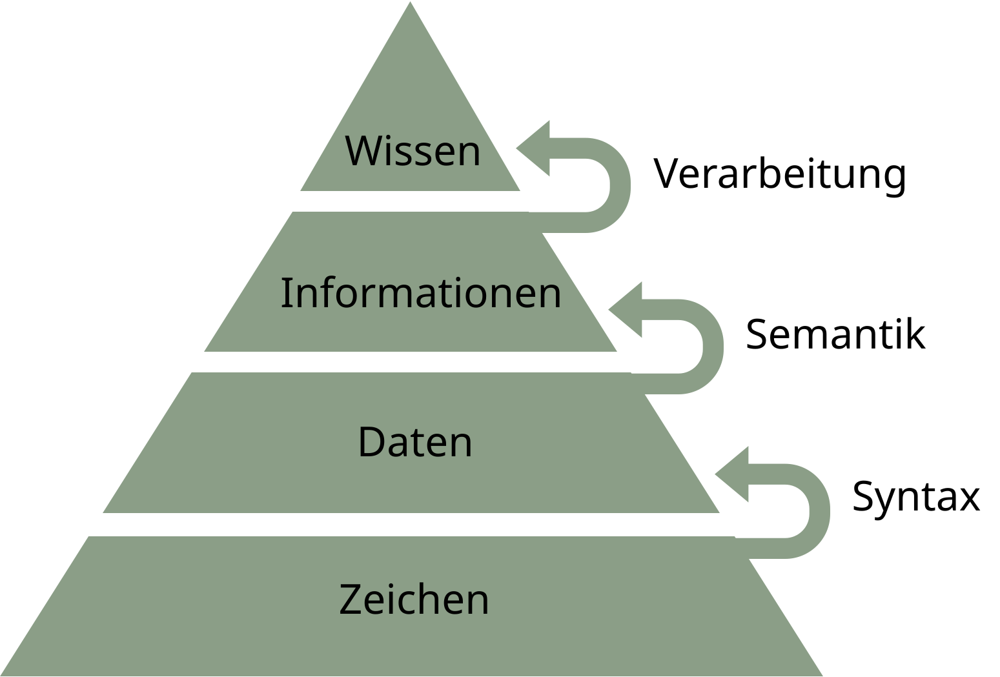
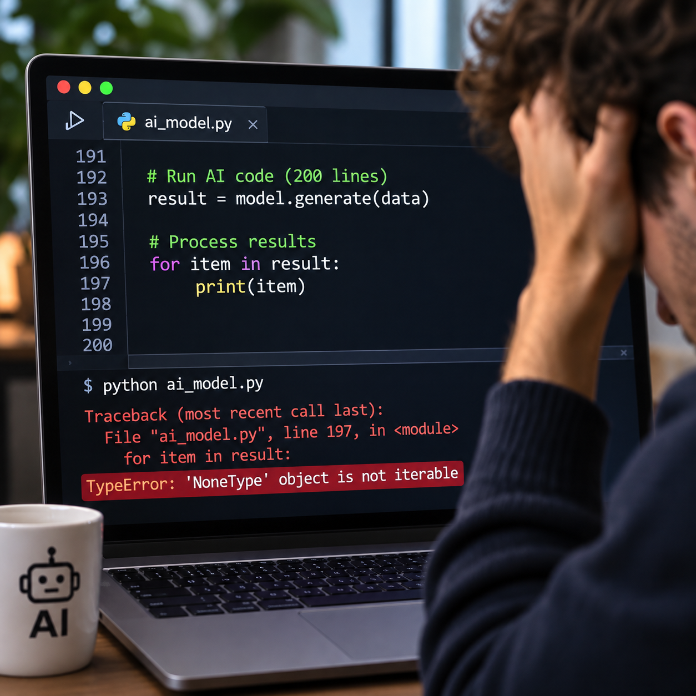

wihle True:
passCell In[1], line 1 wihle True: ^ SyntaxError: invalid syntax
Joern Ploennigs · AI4SC
cf. ‘The Persistence of Memory’ by Salvador Dalí, 1931
Welche Ebenen hat die Wissenspyramide?
Die Wissenspyramide ist ein Modell zur Darstellung der Entstehung von Wissen.
Die vier Elementtypen: Zeichen, Daten, Informationen und Wissen werden pyramidenförmig als 4 Ebenen dargestellt.
Zeichen formen die Basis und das Wissen die Spitze der Pyramide.

Was sind die vier Grundelemente eines Programms?
Ungewollte Fehler passieren u. a. durch:
Gewollte Fehler passieren, wenn:
Was bedeutet dieses Zeichen?

Entlang der Wissenspyramide:

Nach Häufigkeit und Reproduzierbarkeit:
Nach Auftreten:
Cell In[3], line 1 print("Hallo) ^ SyntaxError: unterminated string literal (detected at line 1)
Variable als Funktion aufgerufen (statisch, deterministisch):
--------------------------------------------------------------------------- TypeError Traceback (most recent call last) Cell In[9], line 2 1 laenge = 5 ----> 2 laenge(2) TypeError: 'int' object is not callable
Operator mit Wert des falschen Typs (statisch oder dynamisch):
Wert des falschen Typs an Funktion übergeben (statisch oder dynamisch):
--------------------------------------------------------------------------- TypeError Traceback (most recent call last) Cell In[11], line 1 ----> 1 len(42) TypeError: object of type 'int' has no len()
Division durch 0 (dynamisch, deterministisch):
Erster Schritt: Verstehen der Fehlermeldung
Entstehen durch:
Charakteristika:
Deterministisch: falscher Faktor in einer Einheitenumrechnung
Keine Exception – nur ein falscher Wert (richtig: 36 km/h).
Sporadisch:
Weitere deterministische Fälle: falsche Schleifenart oder Schachtelung, falsche Zeitzone beim Schreiben von Sensor-Daten
Deterministische Fehler:
08a_UnitTest)07b_Debugging)Sporadische Fehler:
print()) den Zustand des Fehlers identifizieren, sodass er reproduzierbar wirdSie führen 200 Zeilen KI-Code aus und erhalten: TypeError: 'NoneType' object is not iterable – was tun Sie zuerst?

Szenario: Eine KI generiert eine Analyse-Funktion für Sensordaten.
Beim Ausführen für einen unbekannten Sensor:
--------------------------------------------------------------------------- TypeError Traceback (most recent call last) Cell In[21], line 1 ----> 1 berechne_mittleren_durchfluss("sensor_01") Cell In[20], line 8, in berechne_mittleren_durchfluss(sensor_id) 6 def berechne_mittleren_durchfluss(sensor_id): 7 messungen = hole_messungen(sensor_id) ----> 8 return sum(messungen) / len(messungen) TypeError: 'NoneType' object is not iterable
Die KI hat stillschweigend angenommen: hole_messungen() gibt immer eine Liste zurück.
Traceback von oben nach unten lesen – der Aufrufpfad bis zum Absturz:
Traceback (most recent call last):
File "analyse.py", line 12 ← Startpunkt
berechne_mittleren_durchfluss(...)
File "analyse.py", line 9 ← Absturz
return sum(messungen) / ...
TypeError: 'NoneType' object is not iterable ← Verletzte AnnahmeSo sieht der Traceback im Terminal aus, wenn analyse.py mit python analyse.py läuft. Traceback = Aufrufliste, eingefroren im Fehlermoment.
<module> → berechne_mittleren_durchfluss() – von oben nach unten.berechne_mittleren_durchfluss() wurde sum(messungen) aufgerufen.TypeError: 'NoneType' object is not iterable – sum() erhielt kein iterierbares Objekt.messungen? Aus hole_messungen(sensor_id).hole_messungen() immer eine Liste liefert.| Exception und Meldung | Verletzte Annahme |
|---|---|
TypeError: 'NoneType' object is not iterable |
Rückgabewert ist nie None |
ZeroDivisionError: division by zero |
Liste ist nie leer, Nenner ist nie 0 |
KeyError: 'sensor_01' |
Schlüssel existiert immer im Dictionary |
AttributeError: 'NoneType' object has no attribute 'mittelwert' |
Objekt ist immer vorhanden |
IndexError: list index out of range |
Liste hat genug Elemente |
Leitfrage beim Code-Review
Welche Eingaben oder Rückgabewerte nimmt der Code stillschweigend an?
Eine Guard Clause prüft eine Vorbedingung am Anfang einer Funktion und löst bei Verletzung sofort eine Exception aus:
Typische Guards vor riskanten Operationen:
if nenner == 0if obj is Noneif not listeKI-generierter Code lässt solche Prüfungen oft weg.
--------------------------------------------------------------------------- ValueError Traceback (most recent call last) Cell In[25], line 1 ----> 1 berechne_mittleren_durchfluss("sensor_01") Cell In[24], line 4, in berechne_mittleren_durchfluss(sensor_id) 2 messungen = hole_messungen(sensor_id) 3 if messungen is None: ----> 4 raise ValueError(f"Unbekannter Sensor: {sensor_id}") 5 if len(messungen) == 0: 6 raise ValueError(f"Keine Messungen: {sensor_id}") ValueError: Unbekannter Sensor: sensor_01
raise melden„Die Funktion
hole_messungen()gibtNonezurück, wenn der Sensor nicht existiert, und eine leere Liste, wenn er keine Messungen hat. Löse in beiden Fällen einenValueErrormit der Sensor-ID aus.”
try-excepttry-Block eine Exception auf, springt Python in den ersten passenden except-Blockexcept: fängt alles, auch KeyboardInterrupt – und versteckt unbekannte Fehlerelse und finally--------------------------------------------------------------------------- SensorNotFoundError Traceback (most recent call last) Cell In[43], line 1 ----> 1 hole_messungen_strikt("sensor_01") Cell In[42], line 7, in hole_messungen_strikt(sensor_id) 5 sensoren = {"sensor_02": [1.2, 3.4, 2.1]} 6 if sensor_id not in sensoren: ----> 7 raise SensorNotFoundError(sensor_id) 8 return sensoren[sensor_id] SensorNotFoundError: sensor_01
raise löst eine Exception aus – wie in den Guard Clausesexcept SensorNotFoundError:factorial_recursiv(21) löst die Exception im 21. Aufruf ausexcept sie abfängt:Ingenieurs-
Informatik